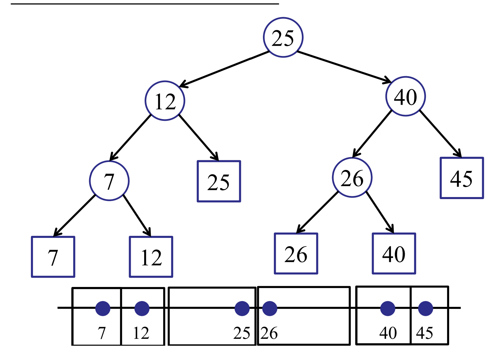
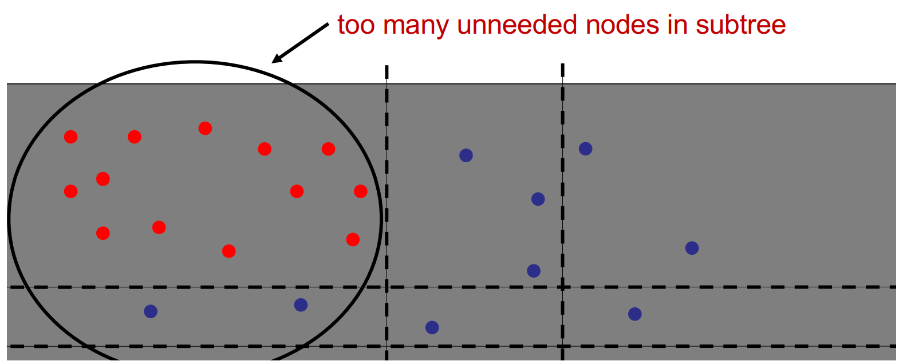
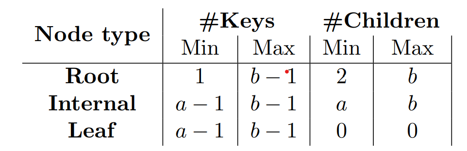
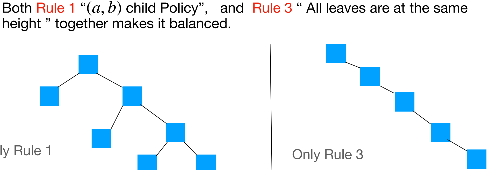
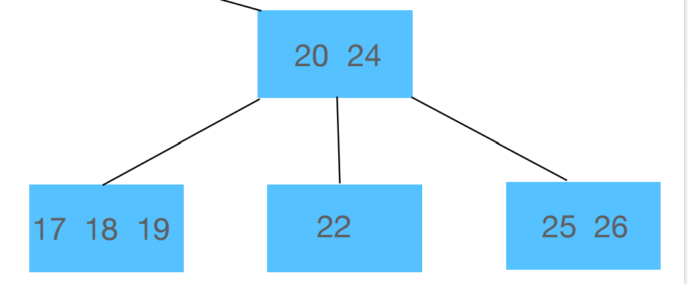
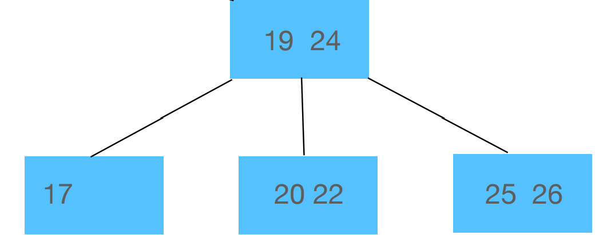
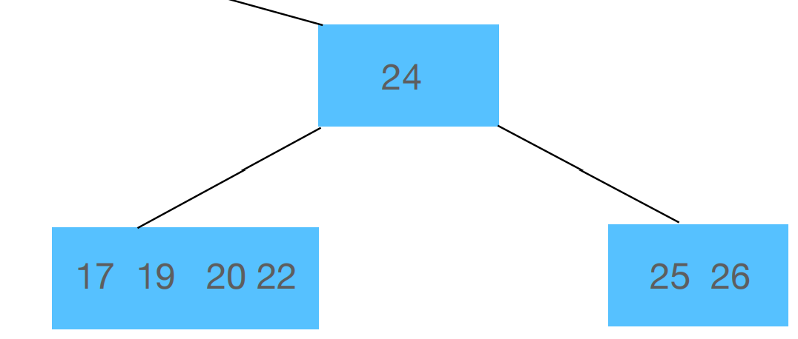
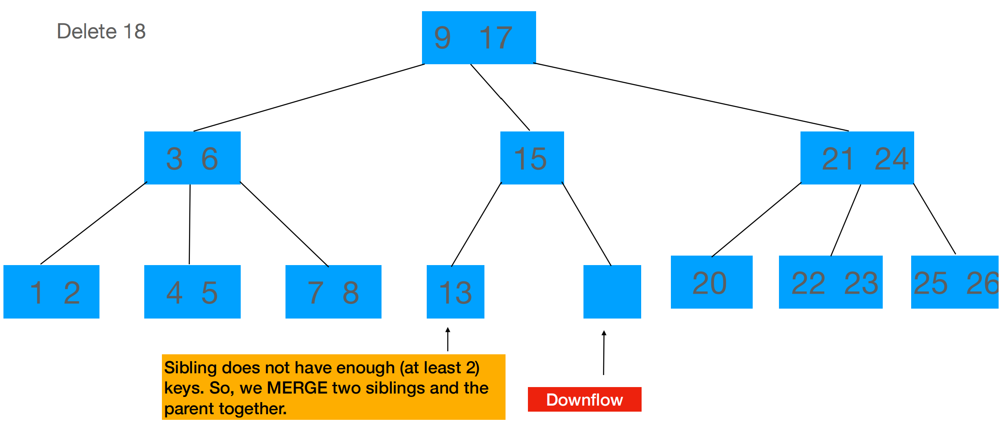
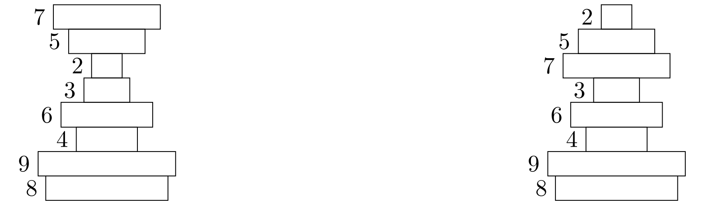

CS2040S CheatSheet
CheatSheet for CS2040S.
Applications of \(binary search\): Think of binary search whenever:
There is a sequence of "\(monotonic\) \(function\)" in blackbox. That is , for each
v[i], fori <= k, it returns false, fori >= k, it returns true.We try to find the k which is the seperating point of a "valid" value.
O(log(n!)) == O(nlog(n))
Sorting
| Features | Bubble Sort | Selection Sort | Inerstion Sort | Merge Sort | Quicksort |
|---|---|---|---|---|---|
| Time Complexity | O(n^2) | O(n^2) | O(n^2) | O(n * log(n)) | O(n * log(n)) |
| NearlySorted ? Random | O(n) < | = | O(n) < | = | [U] undon |
| Space Complexity | O(n) | O(n) | O(n) | O(n) (No need to allocate new arrays, can you previous ones instead) / O(n * log(n)) when it's MergeSort iteration | |
| Stability | 1(swap only when elements are different) | 0(e.g. [2, 2, 1]) | 1(A[i] > key not >=) | 1(if implementation is designed carefully) | Not stable |
\(InsertionSort\): insertion work is done backwards
\(Quicksort\): Partition is done by continuously swapping
A[high] < pivotandA[low] > pivotuntillow >= high. \(Paranoid\) \(Quicksort\) is partition until a good partition.Halt recursion early, leaving small arrays unsorted. Then perform InsertionSort on entire array. (InsertionSort is fast on almost sorted arrays, about \(O(n)\))
k pivot quicksort. Time complexity is \(O(n log n)\). The performance of 2 and 3 pivot QuickSort are actually better than regular QuickSort because 2-pivot quicksort takes benefits of modern computer architecture.
Sort the
kpivots in the pivot arrayKDo
QuickSelect(e, K)on every elementein the original array (partitioning)Recurse.
Find \(k^{th}\) smallest element in an unsorted array: Time complexity \(O(n)\) [U] Why
1
2
3
4
5
6
7
8
9
10Select(A[1..n], n, k)
if (n == 1) then return A[1];
else Choose random pivot index pIndex.
p = partition(A[1..n], n, pIndex)
if (k == p) then
return A[p];
else if (k < p) then
return Select(A[1..p–1], k)
else if (k > p) then
return Select(A[p+1], k – p)
Lecture 08 Trees
Dynamic Data Structures
Tree
\(Successor\)
If you search for a key not in a tree, you would either find its \(successor\) or its \(predecessor\)
1
2
3
4
5
6
7
8
9
10Successor(int key) { // successor function for key (in / not in tree)
int result = search(key); //either return successor or predecessor
if(result > key) return result;
else return SuccessorKeyInTree(result);}
SuccessorKeyInTree(int key) {
if (key has right child ) return rightChild;
while ((parent != null) && (child == parent.rightTree)) {
child = parent;
parent = child.parentTree; // note that here child has become parent}
return parent;}\(Deletion\)
1
2
3
4
5if (key.childNumber == 0) //simply delete.
else if (key.childNumber == 1) //make the child of key substitude chil
else {
//key has two child -> key has right child -> the successor is the min in the right child -> sucessor has no left child.
substitude successor with its child and substitude key with successor.}balanced if
h = O(logN)Find the rank of a node
1
2
3
4
5
6
7rank(node)
rank = node.left.weight + 1;
while (node != null) do
if node is right child then
rank += node.parent.left.weight + 1;
node = node.parent;
return rank;
AVL Trees
- node
vis \(height-balanced\) if|v.left.height – v.right.height| <= 1-> every height-balanced tree withnnodes has heighth < 2log(n).
Interesting Property: a maximal imbalanced AVL tree, with height
h, has S(h) nodes,
S(h) = S(h − 1) + S(h − 2) + 1.

Assume
Ais the lowest node violating balance property. Assuming thatAis left heavy,BisA's left childBis balanced / left heavy: right rotateABis right heavy: right rotateBthen right rotateA.
\(Deletion\): walk up the tree and rotate every unbalanced node.
If the number of keys in heavier sub-tree is at most twice the number of keys in lighter sub-tree, the tree is balanced but no height-balanced.
Tree Operation conclusion
- modifying:
- insert: \(O(h)\)
- delete: \(O(h)\)
- Query Operations:
- search: \(O(h)\)
- predecessor / successor: \(O(h)\)
- findMax / findMin: \(O(h)\)
- Traversal: \(O(n)\)
Interval Queries
search:

when we walk down the nodes to (17,19), the information
that we need are: 17(left interval),
25(max = left subtree)
Case 1:
x > 25(max of left subtree):Go right. (the node is either in right tree or not in tree!)
Case2:
17 < x <= 25Go left. (there must be atleast one node that contains
x!)Case3:
x < 17Go left. (there is 0 possibility that the right subtree contains
x!)
In three cases we are safe to go (the direction we go contains the key / the direction we don't go does not contain key)
insertion & rotation
easy to maintain
Others
[U] Extension: List all intervals that overlap with point?
Orthogonal Range Searching
Introduction
Are there any good restaurants within one block of me - search for the points in a given box
Sample: One-Dimension
Strategy
- Use a binary search tree and store all the points in the leaves of a tree. Each internal node stores the MAX of any leaf in the left sub-tree.

Do
Search(10, 50): (Time complexity: O(log(n) + k), where k is the number of items)- Find Split Node: the highest node that search includes both left and right subtrees(in this case, 25) O(logn)
- Do left and right traversal on the left and right tree. O(k)
- Left Traversal: The search interval for a left-traversal at node
vincludes the maximum item in the left subtree ofv.1
2
3
4
5
6
7
8
9
10
11
12
13
14
15
16
17
18LeftTraversal(v, low, high) {
if (low <= v.key) {
all-leaf-traversal(v.right);
//change all-tree-traversals to total += v.right.ount
//if just need to know how many nodes are with the range
LeftTraversal(v.left, low, high);
} else { // left traversal on the right subtree
LeftTraversal(v.right, low, high);
}
}
RightTraversal(v, low, high) {
if (v.key <= high) {
all-leaf-traverasal(v.left);
RightTraversal(v.right, low, high);
} else {
RightTraversal(v.left, low, high);
}
}
BuildTree time complexity : \(O(n log n)\) ([U] why?)
Dynamic updates: Rotation ([U] how?)
Two-Dimension
- Idea:
- 1: Create a 1d-range-tree on the x-coords.
- 2: Store a y-tree at each x-node containing all the points in the sub-tree.

[U] don't quite understand.
k-d Tree
space partitioning data structure for organising points into a 𝑘-dimensional space
B-trees
(a, b) trees
Rules
2 ≤ a ≤ (b + 1)/2, whereaandbrefers to the minimum and maximum number of children in a internal node(not root / leaf).

every node should follow that: numberOfChild = numberOfKey + 1. For a node with k keys
(v1,v2,...,vk), the subtrees(t1,t2,...,tk+1)should follow that ： First childt1has key ranget1 ≤ v1； Final childtk+1has key rangetk+1 > vk； All other childrentiwherei ∈ [2, k]has key range(vi−1, vi)All leaves should have the same depth.
Manipulation
- Is ab tree balanced?

- Insertion:
Solution 1:
At first put the element in its correct place in the node (which is in sorted order)
If the node overflows, then find the median ( = if is even and if is odd ) key in that node.
Put the median key in the parent and split the current node
Solution 2: Proactive Approach
Preemptively split a node whe it is full so that it does not overflow in the future.
- Deletion:
- Case 1: Problem with Orphan Children.

- In this case, we replace the deleted node either with the predecessor or successor key
- Case 2: Problem with downflow

If at least one sibling has at least a keys, then donate the key to the other sibling
If none have enough keys, then merge the two siblings and the parent together.




B-trees
\(B-trees\) are simply
(B, 2B)-trees. That is to say, they are a subcategory of
(a, b)-trees such that a = B and b = 2B.
- Cost
All the costs of searching a key list / splitting a node / merging / sharing B-tree nodes are \(O(1)\)!
The cost of searching a B-tree / inserting / deleting in a B tree is \(O(loga n)\)!
Others
\[log2n = O( log10n )\]
Correct! We can easily switch between bases by multiplying by a constant.
Lecture 12 Hashing
Basic Concepts
Difference with trees: no comparison between keys. [U] Why do you need \(O(n^2)\) time to sort in symbol table
For
java.util.Map<Key, Value>No duplicates are allowed
Keys are immutable
1 | Map<String, Integer> ageMap = new HashMap<String, Integer>(); |
- How does java implement hashFunctions?
- hashCode should be:
reflexive, symmetric, transitive
consistent(always return the same answer)
simultanious with equals method! (returns the same hashcode if and only if two objects are the same!)
1
2
3
4
5
6
7
8
9
10
11
12
13
14
15
16
17
18
19
20
21
22
23
24
25
26
27
28
29
30// By default, returns the memory location of the object!
// In fact, it just returns some part of the memory location
static int indexFor(int h, int length) {
return h & (length - 1); //returns the last few bits
}
// Sample hashCode functions for different types of variables.
Integer: return value;
Long: return int(value ^ (value >>> 32)) //collision can happen [U]
String: return converToDecimal(String.base31())
// Mathematical calculation: think of the integer as a base 31 number
// and convert it to decimal!
// [U] Why 31? - you can quickly implement mod 31 with bit shifting operations?
// Note that "Aa" and "BB" have the same hasCode value
// Implement your own hashCode method!
public class Pair {
private int first, second;
int hashCode() {
return (first ^ second); // E.g.
}
boolean equals(Object o); // the third rule of hashCode!
}
//Implementation of the get function:
for (e in linkedList) {
if(e.hash == hash && //check if hashcode are the same
e. key == key || key.equals(e.key))
// check if memory address are the same or if they are defined equal
}
Two Good properties of a good Hash Function:
For every bucket
j, there is someisuch thath(key, i) = j. (make sure that you make use of all the space)\(Simple\) \(Uniform\) \(Hashing\) \(Assumption\): Every key is equally likely to be mapped to every permutation, independent of every other key. [U] wut? Why does linear probing violate the rule
Coping with Collision
Concept
Collision:
h(k1) = h(k2), thenk1andk2collide, where h is a hash function that takes in a key and returns the index where it should be stored in the array.
Chaining
Why don't we just insert each key into a random bucket?
search would be slow!
\(Simple\) \(Uniform\) \(Hasing\) \(Assumption\) (\(SUHA\)): every key is equally likely to map to every bucket.
What is the maximum chain length with \(SUHA\)? - O(log(n)) ([U] Why?)
To minimize the maximum chain length, we use two function h1 and h2. store the k in the bucket with a smaller chain. This would reduce the maximum chain length to \(O(log log n)\)
Open Addressing
Concept: find the next bucket! one itme per slot and try to fill in all buckets.
Idea: probe a sequence of buckets until you find an empty one.
h(key, i)whereiis the time that you are trying (to find the slot), Do note that it may not be thath(key, i) = h(key, i - 1) + 1and the "sequence" of objects may be arranged in random order.
Problem: Deletion! If I simply set the box to null, when I try to search after deletion, I would stop at the deleted box and not search for any element after that(we assume that search stops as the first null, since we only stores elements in order). To solve that, we use DELETED for deleted elements instead of null.
\(Linear\) \(probing\):
\(Clusters\)! There are clusters and there is a higher probability for the next
h(k)to hit the clusterIn practice, however, linear probing is faster. This is because caching!
Double Hashing!
- Use two hash functions f, g. \[h(k,i) =
f(k) + i * g(k)\] ([U] Claim: if
g(k)is relatively prime tom, thenh(k,i)hits all buckets. )
- Use two hash functions f, g. \[h(k,i) =
f(k) + i * g(k)\] ([U] Claim: if
Performance(assuming uniform hashing) ([U] why do you need this? Proof? ):
if \[\alpha = n/m\], then \[Cost = \frac {1}{1 - \alpha}\]
So performancee degrades badly as \(\alpha\) -> 1
Resizing
Concept
I don't know how many elements are going to be inserted! - Grow the table!
Idea: Implement a new slot m2 and a new hash function. Scan the items in
m1(old hash table) and insert them in a new hash table - \(O(n)\)
How fast to grow the hash table?
m = m + 1: \(O(n^2)\);m = 2m: \(O(n)\);m = m^2: \(O(n^2)\)Shrinking and growing:
if(n === m), then m = 2m. if(n < m / 4), then m = m /2Claim: Everytime you double a table of size
m, at leastm / 2new items were added.Everytime you shrink a table of size
m, at leastm / 4items were deleted.
Technique of analyzing "average cost" (when some operations are cheap and some are expensive): Operation has amortized cost \(T(n)\) if for every integer
k, the cost ofkoperations is \(<= kT(n)\)e.g. For a list of insertions, the 5 insertions cost 5,5,5,13,7 respectively. The amortized cost = 7, where 5 < 7; 5 + 5 < 7 * 2; 5 + 5 + 5 < 7 * 3...etc
We claim that in this sense, the insert operation of a hash function has amortized cost \(O(1)\) ([U] Proof)
[U] What if we don't want to be the person who triggers the 2 hour hash table incrementing?
Lecture 14: Heaps
Priority Queue
Heaps
Two properties
Heap Ordering:
priority[parent] >= priority[child](different from a binary search tree!)Complete Binary Tree:
Every level is full, except the last
All nodes are as far left as possible
Features
The maimum hbeight of a heap with
nelements:floor(log n)Storing: we store the tree in an array in BFS order. In this case, it is easier to access the last node and the root node.

- How do we find the parent of a node? Since the tree is a Complete
Binary Tree, the parent index would be:
(k-1) / 2!
Operations
Insert:
Step one: add the new leaf to the left most of the last level
bubble up: swap the leaf that doesn't satify the Heap Ordering property with the parent. [U] Why would this work
Increase Key: increase a key from e.g. 5 -> 25.
- bubble up 25.
Decrease Key : 28 -> 4
- We bubble down with the child with the bigger one (22)
Delete:
swap the node with the last node
delete the node
bubble down the last node
extractMax: output the max and delete it.
Performancee:
All these operations are \(O(log n)\)!
HeapSort
Thought1: Unsorted List -> Heap -> Sorted List
Procedure: Keep doing extractMax!
Time complexity: \(O(n log n)\). Faster than Mergesort and slower than Quicksort.
Unstable [U]
Ternary (3-way) HeapSort is a little faster
Thought 2: \(Heapify\)!
Procedure: view the array as a complete tree. Do recursion!
Base case: Each leaf node is a heap
Heapify upwards where each left and right are heaps.(by bubble down)
Code:
1
2
3
4
5int[] A = array of unsorted integers.
for (int i = n - 1 ;i >= 0; i--) {
bubbleDown(i, A);
//O(log n) but most nodes have smaller height!
}Cost:
\[\sum\limits_{h = 0}^{log(n)} {\frac {n}{2^h} O(h)} = O(n)\]
- [U] wait so why doesn't this count? Or why is heapsort consideered O(n log n)? Because to convert a heap into an array you still need O(n log n) ？
Sets
[U] I did not understand a single word he said
Graph
Basic
Terminology
Nodes: At least one; Edges: Each Edge connect two nodes(In hypergraph, each edge connects >=2 nodes in the graph)
\[Graph G = <V,E>\], where
Vis a set of nodes,Eis set of edges\(Simple\) \(path\): set of edges connecting two nodes, which intersects eaach node at most once
Connected: all nodes is connected by a path
Cycle: where the last and first node are the same(not actually a path)
\(Degree\): number of adjacent edges.
\(Diameter\): Maximum distance between two nodes following the
\(Cut\) of agraph is a partition of the vertices into two disjoint subssets.
- Edge across the cut is the edge that has one node in each of the subsets
\(Directed\) \(Path\): Each edge is directed
- In-degree and Out-degree
Weight: the cost to travel from
v1tov2isw[v1][v2]. It can be a negative number
Different Kinds of Graphs
Unrooted Tree: Connected graph with no cycles. Forest if not connected
Star: one central node that has connection to all other nodes ([Do the foot of the stars need to be connected?])
Clique(Complete Graph): All pairs are connected by edges(dimaeter: 1)
Cycle: a circle.
Bipartite: There exists a partition, where the edges only go from one edge to another. (Method to judge whether one graph is a bipartite: choose a random node and color it red, color the neighbours blue...etc)
Planar graph: You can draw the graph in a way such that no edges intercross each other
Storing Data
\(Adjacency\) \(Matrix\) : Graph represented as
A[v][w] = 1iff there is an edge betweenvandw.- \(Neat\) \(property\):
A^2= if there is length 2 paths([U] How does this work)
- \(Neat\) \(property\):
Memory usage for graph
G = (V, E)Adjacency List: \(O(V+E)\)
Adjacency Matrix: \(O(V^2)\)
if a graph is dense ( \(|E| = O(V^2)\) ) use adjacency Matrix
BFS and DFS
Concept
- Level: the 1st level consists of nodes that have path of length 1. The 2nd level consists of nodes that have path of length 2 but do not have path of length 1.
BFS
Steps:
- Build levels.(calculate
level[i]fromlevel[i - 1], skip already visited nodes)
- Build levels.(calculate
1 | BFS(Node[] nodeList, int startId) { |
- Complexity: \(O(V + E)\). Each vertex is added once and each edge is added once. (Do note the difference between E-edges and number of neighbours in each vertex here.)
DFS
1 | DFS-visit(Node[] nodeList, boolean[] visited, int startId){ |
Shortest Paths
- Key idea: \(triangle\) \(inequality\) \[cost[s][c] <= cost[s][a] + cost[a][c]\]
Shortest Path from s to every node
1 | for(Edge e: graph) |
Bellman-Ford
Code
1 | for (int i = 0; i < V.length - 1; i++) { |
Proof
Suppose there is no negative-weight cylce ([S] What about those that don't satify? - Then it makes no sense calculating the shortest path, just keep going in circles![^4]) [^4]: In fact, you can use Bellman-Ford to try finding a negative weight cycle - just try to see whether edge is relaxed after n-1 iterations!
Invariant: After
jiterations(the outer loop), for any j-hop nodeu,cost[u]stores the correct answer. j-hop node refers to the nodeuwhere on the shortest path fromstou, there arejedges.Proof by Induction
Base case: After 1st iteration, all 1-hop nodes stored the correct value \[cost[u] = weight(s,u)\]
If \[cost[hop_{j - 1}] = ultimate\_value\] after one iteration, the edge connecting (
j-1)hop nodes and j-hop nodes are relaxed. Thus \[cost[hop_j] = ultimate\_value\]Since all nodes in Graph are at most
n-1hop nodes (since there is no cylce in the ultimate shortest path)
Performance: O(VE). If weight of all edges are the same, then just use BFS*
Dijkstra
Basic Idea
Steps: Maintain a priority queue, which stores the keys and is prioritized with the current estimated
dist[k]. Maintain an arrayvis, wherevis[k] = trueif the nodekis visited, ordist[k]stores the correct answer.Initialize: change all nodes to be unvisited and all \(dist[k] = infinity\). Put the starting node into the priority queue and change dist[s] = 0.
Loop: For each loop, extract the minimum element in priority queue, lets say
m. markmas visited(we'll explain whydist[m]stores the correct answer in a second)Relax all edges connected to
m. Put the nodes which are not visited in the queue, update the nodes that are in the queueRepeat the Loop step.
1 | public Dijkstra{ |
[U] How did they come up with such a genius idea! Rethink about the thinking process.
Proof
Imagine all the nodes on the graph to be of three categories:
visited nodes(nodes that already have the currect distance
stored), fringe nodes (unvisited nodes that have at least
one edge that are connected to visited nodes), and
unknown nodes (these are nodes whose information are
completely unknown and don't have any edge connected to the
visited nodes). As shown in the picture below.

Before the proof, there are four properties that a graph would hold.
Any subpath of a shortest path is a shortest path. (Proof by contradiction)
All
fringe nodesare in the priority queue.All shortest paths that ends with an unvisited node would involve at least one visited node and one fringe node.
At anytime, for any node v, \[curr\_dist[v] >= dist[v]\]
Now, we proof by induction: If at anytime, suppose
for the visited elements, all distance stored are correct, then the next
element that we delete in the priority queue would store the correct
dist[m].
We will prove this by contradiction:
- Suppose we delete the minimum element from the priority queue, m,
the
dist[m]stores the wrong value. However, the "shortest path" that involves m is the orange path shown in the picture.

By property(3), suppose the first fringe node that the shortest path involves is w. Since m is removed from priority queue(with property(2)), \[curr\_dist[m] > curr\_dist[w]\tag{1}\]
However, since
mis in the shortest path tow([U] Is this true? does curr_dist[m] really stores the correct value?), \[curr\_dist[m] = dist[m]\tag{2}\], by property(1), \[dist[m] > curr\_dist[w]\tag{2.5}\]. Since we know thatmis in the shortest path tow, we say \[dist[m] <= dist[w]\tag{3}\], we conclude that \[dist[w] >= curr\_dist[w] \tag{4}\], which is contradictory to property(4).
The proof only works for weightsthat are all positive. If there is negative weight edges, formula(3) will not hold. This is different from Bellman-Ford Algorithm
Performance Analysis
Time Complexity: we insert / delet Min for
|V| times each, since every node is added to the priority
queue oncec. We decreaseKey at most |E| times. Since
priority queue operations are \(O(log
V)\) \[runtime = O((V+E)logV) = O(E
log V)\]
Priority Queue by AVL tree(with Hash Table): \(O((V + E) log V) = O(E log V)\)
insert: \(O(log n)\)
deleteMin(): \(O(log n)\)
decreaseKey(key, priority): \(O(log n)\)
contains(key): \(O(1)\)
Performance iseven vetter if use d-way Heap or Fibonacci Heap(?)
Special Cases
- For
Trees, we can relax in the order of BFS/DFS!
Topological Sort
Directed Acyclic Graph(e.g. scheduling cooking
steps!):
Definition: graphs that has no cycles.
Topological order: there exists(more than one) sequential total ordering of all nodes, such that when I travel the nodes in that order, I would not disobey the order. [U] Why
We use post-order DFS!
Why don't we use BFS?[U]
Why don't we use pre-order DFS?([U] I mean I can understand that it doesn't work but what's the key point of determining which algorithm to use here?)
Time Complexity: \(O(V+E)\)
Alternative Solution
Add all nodes in Graph that has no incoming edges to the topo-order, remove all the edges adjacent to these nodes, remove the nodes, repeat.
\(O(V + E)\)([U]Why? No EXPLAINATION?)
After we Topological Sort the problem, we just relax the nodes in topological order. ([U] How exactly do you implement this, it's quite crucial for proving the correctness)
Weight Union
Functionalities
Union(i, j)isConnected(i, j): return whether i and j are in the same unionUnion-Split-Find: for weight unions that implements this functionality, check THIS
Idea: store data in a tree structure. Each tree is a union. When union
i,j, find the root ofiandjand merge the two trees.Find(i): find the root ofiMerge(rt1, rt2): union the two trees. We merge trees by setting the parent of the root of the smaller tree to be the root of the other tree.
Performance
isConnected(i, j)andUnion(i, j): \(O(h)\) / \(O(log n)\)Proof that \(h = O(log n)\) : Proof that for any tree of height h has at least \(2^k\) nodes. Proof this by induction: suppose for height k trees this is true, proof that for height k+1 trees this is true.
improvement: set parent of every node that is traversed to be the root node (flattens the tree - path compression!)
Starting from empty, any sequence of m union/find operations on n objects takes: \(O(n + mα(m, n))\)time., where \(α\) is the inverse arckermann function ([U] ? Proof and some knowledge about the function? Tarjan 1975)
Application
- Binomial tree
Minimum Spanning Trees
Basics
Spanning Trees: In a weighted, undirected graphs([U] Why is it more complicated with directed graphs), spanning tree is an acyclic subset of the edges that connects all nodes.
Minimum Spanning tree: a subset of a undirected weighted graph which connects all nodes and has the least total weight.
Properties
Assumption: For simplification, assume all edge weights are distinct.
No cycles are in the MST.
\(Cut\) \(Property\): if you cut an edge on a minimum spanning tree, then the rest two components
T1andT2, would still be the MST for the respective nodes.(However,T1 MST+T2 MST+Minimum edge!=(T1 + T2)MST)\(Cycle\) \(Property\): For any cycle on the original graph, the maximum weigt edge is not in the MST.
- Proof: Proof by contradiction - If the maximum weight edge is in the MST. By property 1, at least 1 edge of the cycle is not in the MST, lets all these edges Enot. By property 2, if we cut the maximum weight edge, the rest of the two parts are still MSTs, then if we add one edge that connects the two parts, it would have a smaller weight. Now we just need to proof that there is at least one Enot that connects the two parts. ([U] how do you prove this? By cycle property?)
For every partition of the nodes, the minimum weight edge across the cut is in the MST. (However, it might not be the only one!)
- For every vertex, the minium outgoing edge is always part of the MST.
Generic MST Algorithm
Apply the red rule or vlue rule to an arbitrary edge until no more edges can be colored.
Red Rule: If
Cis a cycle with no red arcs, then color the max-weight edge inCred. (Property 2)Blue Rule: If
Dis a cut with no blue arcs, then color the min-weight edge inDblue. (Property 4)
Proof of the greedy algorithm:
- On termination, every cycle has a
rededge, and theblueedges form a tree(if not, then there is a cut with noblueedge). Every edge iscolored. ([U]Why, can't there be an eedge that neither satisfy theredrule, nor satisfy thebluerule? )
- On termination, every cycle has a
MST Algorithms
Prim
Basic Idea:
S: set of nodes connected by blue edges.Repeat: Identify the cut: {
S,V - S}Find minimum weight edge on cut (Priority queue)
Add new node to
S
[U] In the code for prim, why should the priority queue keep track of the nodes rather than simply keep track of the weights?
Kruskal
Basic idea:
sort edges by weight from smallest to biggest.
Consider edges in ascending order:
If both endpoints are in the same
bluetree, then color the edgered. (Must be the heaviest edge in the loop!)else, color the edge
blue.
Variations of MST
What if all edges have the same weight?
- DFS / BFS!
What if all edges have weight of {1...10} ?
In kruskal algorithm, we no longer need to sort the edges, we just use array of size 10. (Why does thi make time complexity \(O(\alpha{E})\))
In Prim's algorithm, we use array of size 10 as the priority queue. Where slot A[j] stores a linked list of nodes of weight j. The time complexity would be \(O(E)\)([U] Go through thi).
[U] Why would this fail for Dijkstra's Algorithm?
Directed Minimum Spanning Trees
- Special Case: For a directed acyclic graph with one "root", We can generate MST by adding minimum weight incoming edge for every node except the root([U] Why?)
Maximum Spanning Trees:
Only relative weight matters.
multiply each edge by -1 (why does this work)
Dynamic Programming
Basic
Optimal substructures
Overlapping sub-problems: smaller problems are used to solve multiple different bigger problems.
Check the Floyd Warshall Problem
Graph Summary

[U] Where should I put Topological sort, under shortest paths or parrallel? Should it be named Topological sort or DAG?
Problems (in tutorials)
Mountain stack
A mountains consists of n hills, aligned linearly.
Each hill i, stands at a height of a[i].
Standing at hill i, you’ll see a point j
kilometers away if and only if all hills from i−j to
i are no taller than a[i] meters. For each
hill i, determine the maximum distance you can see from
it(distance is "-1" if no hill blocks your sight).
(Hint: try using a stack to achieve \(O(n)\) time complexity)
Answer: Use a monotonic decreasing stack:
- For every element at index
iin the array:
1 | boolean isInfinity = true; |
[U] This is somehow incorrect. But the idea is similar. pls correct this.
How to come up with this: Gather only the information you
need! Information for any hill i that is lower
than another hill j where j > i can be
eliminated!
Chicken Rice Competetion :
- You have in front of you
nplates of chicken rice, each plate containsnbites of chicken rice. Supppose you want to find the median chicken rice. Design an algorithm to maximize the amount of remaining chicken rice on the median plate. - Solution 1: Run \(QuickSelect\): on
one level of QuickSelect, the expectation of time of bitten on any plate
is
(1 / n) * (n - 1) + (1 - 1 / n) * 1 <= 2. Thus the expected consumption of chicken rice is \(O(2 log n)\) bites. - Solution 2: Inserting each plate into an AVL tree takes \(O(log n)\) comparisons. (However, if median is the root of AVL tree, there would be \(O(n)\) moves!)
- In fact, using a randomized algorithm, this can be solved with only \(O(log log(n))\) bites to the median plate, but that is much, much more complicated [U]
Weight Selection(Eonomic Research):
You are an economist doing a research on the wealth of different generations. Each row of data you've gained consists of a unique identifier, an age, and a number that represents their amount of wealth. Your goal is to divide the dataset into “equi-wealth” age ranges. That is, given a parameter k, you should produce k different age ranges
A1,A2, ...,Akwith the following properties:All the ages of people in set \(A_j\) should be <= the ages of people in \(A_{j+1}\).
The sum of wealth in each set should be (roughly) the same (tolerating rounding errors if k does not divide the total wealth, or exact equality is not attainable).
You should assume that the given k is relatively small
while the dataset is very large . (i.e. \(O(nk) < O(n log n)\))
Design the most efficient algorithm you can to solve this problem.
Optionally, consider the case where rows can consist of the same ages,
versus the case where rows have unique ages. - Solution: a weight
selection problem. We are asking to find the
1/k,2/k,...,k−1/k order
statistics of the weighted sum 1. Finding a single Weight Order
Statistic. - First, use \(QuickSelect\)
to find the median aged dataset, and then partition around the median -
sum the totals on the left and right halves. (DO the sum while
partitioning to save time!) If target weight > left sum,
subtract left sum weight from your
target weight and search on right half...etc. This is \(O(n)\) time. 2. repeat for the
k - 1 targets and Do one final partitioning to build
your output lists([U] why is this nessary) This is \(O(nk)\) time.
Solution 2: Instead of finding the median, we use a \(random\) \(pivot\). Each time we partition, we keep track of the sum of the wealth to the left of the selected pivots! We do
Quickselect\(O(k)\) times and each selection takes \(O(n)\) times. ([U] Needs further explanation, see tutorial slides w6 "better solution") [U] Why is this better than Solution 1?Solution 3: Find
korder statistics all at once! When random pivot was selected, say its 2 * \(\bar{w}\), then we recurse on the left to find the 1st order-statistics and recurse on the right to find the 3rd order-statistics! In this case, we get a rough overall runtime of \(O(n log k)\) ([U] Needs further explanation, see tutorial slides w6 "better solution")[U] How about naiive solution?
Height of Binary Tree After Subtree Removal
Description: You are given a binary tree with
nnodes. You are givenmqueries, wherequeries[i]asks the height of the tree after deletion of the subtree containing theith node. What is the optimized solution?Solution 1 : Build a tree. for each query, walk up the tree and try to update the node's height. \(O(log n * m)\) ([U] Why does the slides say its O(n * m)?)
Solution 2: Depth of a node refers to the number of edges in the simple path from root to the node
preprocess the tree to get its depth using DFS and height using in-order-traversal.
For
ith query, we look at all the nodes with the same depth of ith node and find the maximum height among them. The answer to the query would benode[i].depth + max_height.So how do we group the nodes of the same depth? We do this by iterating the nodes in in-order-traversal([U] wut?). For each group of nodes in the same depth, we only require the maximum height and second maximum height. To do this we need O(n) time([U] wut?).
In this algorithm, we only need \(O(1)\) for each query. The overal time complexity would be \(O(n + m)\)
[U] There is another method based on Euler Tour Tree (which is out of syllabus of CS2040S). You may find more details about the data structure on
https://courses.csail.mit.edu/6.851/spring07/scribe/lec05.pdf and http://web.stanford.edu/class/archive/cs/cs166/cs166.1166/lectures/17/Small17.pdf.
The data structure provide a neat alternative solution and support for deleting multiple subtrees.
Safely Evaluating average pay!
- Question 1
Come up with an algorithm that will allow the students to determine the average pay of the group without revealing their own salaries to any of the other members in the group
- Solution 1: Everyone pick a random number and add it to there salery. 1st person passes the sum to the 2nd person, the 2nd person add their sum to the number the 1st one passed ... Until everyone's sum adds up. Then they deduct the number one by one.
- Extention:
what happens if
kmembers of the group decide to collude and share information. Is your algorithm still able to preserve the privacy of all the members, or could the salary for some of the members be leaked- Solution 1 will not work! the (
i-1)th and (i+1)th person can easily calculate the ith people's salery! ([U] is there a way to manipulate the order of adding and subtracting such that there is no way they can do that?)
- Solution 1 will not work! the (
Solution 2: Divide the salery into
npieces and each person give theith piece of their salery to theith people! Even if everyone in the house except for thekth person cheat and try to calculatekth person's salery, they cannot do so! ([U] How did you come up with that!)
Way to come up with a good algorithm: [U] ?
How you (re)define the problem
Determines what are the metrics of success
How to iterate a solution?
Pancake flipping!
- Description:
Try to serve pancakes a stack sorted by size. You can only flip the pancakes at the top of the pancake stack.

- Show that any pancake flipping algorithm requires at least n flips. What do we call such properties of the problem? [U] Check out recitation 2
A lower bound of the algorithm!
Consider a possible worst case!

Why is this the worst case? [U] Worst case should differ for different algorithms?
Feature 1: if two consecutive pancakes in the sorted pancake stack are together in the unsorted stack then we can treat those pancakes as one pancake either with burnt side up or down based on their order. This means that if
24are adjacent in the original pancake, we must use at least one flip between2and4to seperate them!Feature 2: If the largest pancake is at the bottom we can simply ignore it.
By Feature 1, we need at least
n - 1flips. By feature 2, we need at least 1 additional flip to seperate the bottom one and the table! Thus the lower bound is at leastnflip.
[U] Check out recitation 2 on more about pancake flipping.
DNA Swapping
- Description
- We are doing sorting when only calculating the cst of swapping
subarrays. The cost of swapping subarrays of length
kwould cost \(O(k)\).
- What if we are sorting an array of two element? - Do mergesort!
- What if the input string comprises of arbitrary characters without duplicates.
- Wait, we can do this using the solution in 2! partition is the same as sorting an array of two kinds of elements! The time complexity is \(T(n) = 2 * T(n / 2) + O(n log n)\). [U]
Random Permutation
Given an array of n items, we need to return a random permutation of the given array.
How do we evaluate the performance of a random permutation algorithm!
- The possibility of each permuatation to appear in the array should be \(n!\)
Consider the Fisher-Yates / Knuth Shuffle algorithm: Time Complexity \(O(n)\) and Space complexity \(O(1)\)! [U] why is space complexity \(O(1)\)
Solution 2: assign a random number to each element and sort it!
Question: what if we meet duplicate numbers?
If the sorting is stable, simply treat the earlier occurence to be the smaller one([U] Is this still random? )
If not, the sorting would not be stable!
Binary Counter Amortized Cost
Suppose we have a binary counter, after
nincrements, what is the amortized cost?Simple answer: \(O(log n)\). But this is not the case!
Closer look: 2! [U] Seems kind of unclear
Observation: each increament would only change one 0 to 1.
Suppose each bit is a bank. When we change from 0 to 1, add 1 dollar, when we change from 1 to 0, pay 1 dollar.
[U] Check the ppt
Scheduling
Suppose we have a list of tasks, some of the has constraints like A has to be done at least 10 minitues before B, C must be done after D, E must be done at most 20 minutes after F...etc
Think of this as a \(DAG\) problem! Imagine the tasks as nodes and the edges as constraints of the nodes,
dist[u]means the shortest time needed to completeu.For constraint:
Ahas to be done at least 10 minutes beforeB. this means \(dist[A] + 10 <= dist[B]\) since in graphs we only have \[dist[u] <= dist[v] + weight[u,v]\], we transform the constraint to be \[dist[A] <= dist[B] - 10\], therefore, the edge betweenAandBwould be \(-10\).Now, we add Starting point
Swith edges of weight 0 connected to all nodes and run Bellman-Ford onS.Time Complexity: \(O(n * m)\), where
n,mis the number of tasks and constraints respectfully. ([U] Why don't we use topological sort?)
Puzzles:
[U]Sicherman Dice
[U]Puzzle of the Week: Bubbly (Courtesy: MIT Puzzle Hunt, 2019)
[U]Treasure Island:
You choose a set of keys.
You can test whether all the good keys are in the set (and possibly some extra keys). If even one bad key is in the set, then it fails.
Goal: identify exactly the good keys.
PotW: Gambling for Profit? (Lecture 07 p121)
Prisoners! (L10)
Updated Until:
Lecture 11 p103
tut 2
[U] optional questions in tutorials.
[U] Check the open resourse
[U] Check this out: visualAlgo
[U] HashTable - Tutorial Slides W6 - problem 2 -credit CS2109S
[U] Optional problems in tuts and recs
There are some useful advice on midterms in Week 6 tut materal